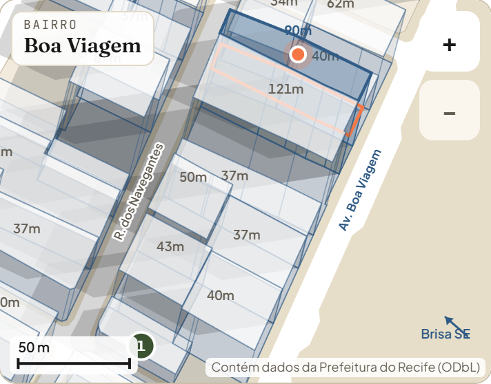

Caderno
4 IMÓVEIS · GUARDADOS SÓ NESTE APARELHO
1Visita marcada
3Triagem
Parque Atlântico
Av. Boa Viagem, 2290 · 14º andar
Boa Viagem · 58 m² · 2 quartos · R$ 720.000
 Contém dados da Prefeitura do Recife (ODbL)Abrir mapa
Contém dados da Prefeitura do Recife (ODbL)Abrir mapa
- 1Bolso~R$ 6.805por mêspara entrar, R$ 152 mil
- 2Prédio201629 andares12% acima das escrituras
- 3Rua6,9de 10, a pémercado a 5 min · ônibus a 4
- 4Conforto~58dB(A) à noiteestimativa · calor 9,2 de 10
- 5Perguntas12para a visita1 achado: IPTU não confere
- Pulso7,9de 10média de 6 leituras da quadra
01Bolso
Cabe no bolso?
~R$ 6.805por mês
O anúncio mostra R$ 1.075. Faltam a parcela e a luz.
anúnciocadastroestimativa
- Parcela do banco~R$ 5.371estimativa · 80% em 30 anos
- CondomínioR$ 980anúncio
- IPTUR$ 130cadastro do prédio · IPTU 2026
- Luz~R$ 324estimativa · 2 pessoas, ar à noite
- Soma~R$ 6.805
O anúncio diz IPTU de R$ 95. No cadastro, apartamentos de 58 m² pagam R$ 142.
Perguntar ao corretorTerreno da União: sem aforamento, o FGTS não entra.
02Prédio
O prédio é confiável?
201610 anos de uso
29 andares, 103 apartamentos, padrão médio.
Preço e escrituras do prédio
12%acima da mediana
12 VENDAS EM 36 MESES · VALOR FISCAL, NÃO PREÇO DE MERCADO
- Apartamentos como este25de 57,72 m², no IPTU 2026
- Estruturasem registrosem alerta de alvenaria resistente (29 andares) · nenhum laudo guardado
- Terrenoda Uniãomarinha · trava o FGTS sem aforamento
- Torre nova à frenteSem leiturabase ainda não publicada aqui · fora da média
- Próxima obra grande2031fachada, aos 15 anos do prédio
- Condomínio por m²R$ 16,90MEDIANA DO BAIRRO: SEM LEITURA · PRECISA DE 5 NO CADERNO
03Rua
Como é a rua?
De dia, a pé
6,9de 10
mais perto que 48% dos prédios do bairro
De noite
4min
até o ônibus · último às 23:58, com 2 travessias
Registros a até 150 m, em 12 meses
No bairro
17,1registros policiais por mil moradores
12 MESES ATÉ OUT/2026 · SDS-PE COMPILADO PELO CRIME BRASIL
Bairros vizinhosIsso bate com a rua hoje?
04Conforto
Barulho, calor e chuva
~58dB(A) à noite, na janela
8 dB acima da referência para área residencial.
ESTIMATIVA COM DADOS ABERTOS, NÃO MEDIÇÃO · FAIXA DE ±5 dB
Sossego à noite7,3de 10 como foi calculada- De dia, na janela~65 dB(A)estimativa · 10 dB acima da referência (55)
- No quarto, janela fechada~38 dB(A)estimativa à noite · a janela tira cerca de 20 dB
- Via mais perto45 mRua dos Navegantes, lado noroeste
- Aviãonão entrafora da linha de pouso · não pesa neste prédio
Calor
9,2de 10 · fresco e ventilado como foi calculadaSol da manhã, brisa do mar e quadra 2,2 °C mais fresca que o bairro.
Chuva
Sem alagamento registrado na rua.
- Altura do terreno14,6 macima dos pontos baixos em volta
- Água mapeada mais perto566 m
- Defesa Civil na avenida80atendimentos de 2014 a 2024 · a base não diz o prédio
Sem registro não garante que a rua não alaga: pergunte na visita.
05Perguntas
O que perguntar e conferir
12pontos para a visita
7 vêm dos registros da rua; os 2 primeiros, do risco deste prédio.
Para o corretor
- O IPTU é R$ 95 ou R$ 142 por mês?
- O terreno é aforado ou só ocupado?
- Há cota extra ou obra aprovada?
- Qual é o saldo do fundo de reserva?
GUARDADO SÓ NESTE APARELHO · ÍNDICE DE 15/11/2026
Viena
Av. Visc. de Albuquerque, 186 · 5º andar
Madalena · 141 m² · aluguel de R$ 3.600
 Contém dados da Prefeitura do Recife (ODbL)Abrir mapa
Contém dados da Prefeitura do Recife (ODbL)Abrir mapa
Como foi calculada
Sossego à noite
7,3 de 10 · estimativa
- O que mede
- O barulho médio do lado de fora, à noite (22h às 7h), na janela do seu andar e da sua fachada.
- Fonte
- Vias e pista do aeroporto do OpenStreetMap; ônibus do GTFS Grande Recife; metrô da CBTU; licenças de som da Prefeitura; comércio do Censo 2022.
- Data
- Vias de 17/11/2026 · Censo de 2022.
- Cálculo
- Cada via entra com o nível da sua classe, mais os ônibus. O som cai com a distância, o andar e o lado da fachada. Nota 10 com 48 dB(A) ou menos; nota 0 com 86 ou mais (estimativa).
- Limite
- Estimativa com dados abertos, não medição. Não vê muro, vizinho, festa nem o trânsito de cada hora. Perto de avenida, leia como teto.
- Na visita
- Ouça da janela do quarto, aberta e fechada, num dia útil por volta das 18h e numa sexta depois das 22h.
Fonte
IPTU 2026
- Este dadoR$ 130mediana do IPTU das 103 unidades do prédio, por mês
- ÓrgãoPrefeitura do RecifeSecretaria de Finanças · cadastro imobiliário
- Confiançaregistro oficial
- LicençaODbL
- Base modificada em03/10/2026
- Consultada em15/11/2026
RECORTE: APARTAMENTOS, AGRUPADOS POR RUA E NÚMERO
Sobre os dadosCaderno
NENHUM IMÓVEL AINDA
Novo imóvel
Cole o link ou busque o prédio
ZAP, VIVAREAL, QUINTOANDAR E OLX
Novo imóvel
Cole o link ou busque o prédio
Procurando no cadastro
Novo imóvel
Cole o link ou busque o prédio
1 de 12 prédios nesta avenida
Ana ElizabethAv. Conselheiro Rosa e Silva, 537 · Graças · 1972 · 62 apartamentos Mais 11 prédiosNovo imóvel
Cole o link ou busque o prédio
ZAP, VIVAREAL, QUINTOANDAR E OLX
O Vereda não pode ver onde você está.
Busque pelo nome do prédio ou da rua.
Abrir ajustesAnúncio lido · zapimoveis.com.br
2 quartos em Boa Viagem
- PreçoR$ 720.000
- CondomínioR$ 980
- IPTUR$ 95
- Área58 m²
- Andar14º
É este o prédio?
Parque Atlântico
Av. Boa Viagem, 2290 · 2016 · 29 andares
25 APARTAMENTOS DE 57,72 m² NO CADASTRO · MESMA AVENIDA DO ANÚNCIO
USA 1 CRÉDITO DE TESTE
Apto. em Casa Forte
Rua não informada no anúncio
Casa Forte · 66 m² · 2 quartos · R$ 690.000
Parque Atlântico
Av. Boa Viagem, 2290 · 14º andar
Boa Viagem · 58 m² · 2 quartos · R$ 720.000
Os dados de Boa Viagem não chegaram.
O que veio do anúncio continua aqui.
- PreçoR$ 720.000anúncio
- CondomínioR$ 980anúncio
- IPTUR$ 95anúncio
Abre quando os dados chegarem
Prédio Rua Conforto01Bolso
02Prédio
03Rua
04Conforto
● CONTA NOS 6 PONTOS · EMPATE QUANDO A DIFERENÇA É PEQUENA
O que pesa mais
A pergunta que decide
O IPTU é R$ 95 ou R$ 142 por mês?
São R$ 564 por ano de diferença no Parque Atlântico.
A obra a 116 m ainda está ativa?
A licença venceu em 01/2025.
O terreno do Parque Atlântico é aforado?
Sem aforamento, o FGTS não entra na compra.
Visita
12pontos para conferir
- A água da rua entra na garagem?6 PEDIDOS DE DRENAGEM EM 12 MESES
- Internet no cômodoSEM TESTE NO CADERNO
- As obras próximas afetam a rotina?1 OBRA LICENCIADA A 150 m
- A rua acumula água na chuva?6 PEDIDOS DE DRENAGEM EM 12 MESES
- Como é a rua à noite?30 PEDIDOS DE LÂMPADA APAGADA
- Como é atravessar a rua a pé?10 SINISTROS COM VÍTIMA, 2022 A 2024
- Onde o lixo espera a coleta?COLETA À NOITE: SEG, QUA E SEX
- A Defesa Civil já esteve no prédio?80 ATENDIMENTOS NA AVENIDA, 2014 A 2024
- Há cota extra ou obra aprovada?PEÇA ATAS E BALANCETES
- Como é a pressão da água?TESTE TORNEIRAS E CHUVEIRO
- Como é o ruído com a janela aberta?OUÇA NA VISITA
- O sol chega às janelas?ANOTE A ORIENTAÇÃO
Visita
A água da rua entra na garagem?
6 PEDIDOS DE DRENAGEM EM 12 MESES
Internet no cômodo
SEM TESTE NO CADERNO
As obras próximas afetam a rotina?
1 OBRA LICENCIADA A 150 m
A rua acumula água na chuva?
6 PEDIDOS DE DRENAGEM EM 12 MESES
Como é a rua à noite?
30 PEDIDOS DE LÂMPADA APAGADA
Como é atravessar a rua a pé?
10 SINISTROS COM VÍTIMA, 2022 A 2024
Onde o lixo espera a coleta?
COLETA À NOITE: SEG, QUA E SEX
A Defesa Civil já esteve no prédio?
80 ATENDIMENTOS NA AVENIDA, 2014 A 2024
Há cota extra ou obra aprovada?
PEÇA ATAS E BALANCETES
Como é a pressão da água?
TESTE TORNEIRAS E CHUVEIRO
Como é o ruído com a janela aberta?
OUÇA NA VISITA
O sol chega às janelas?
ANOTE A ORIENTAÇÃO
Instrumentos
Ruído: janela aberta e fechada
−9 dB
com a janela fechada · diferença no mesmo aparelho
Como soa lá dentro?
- Fachada da sala116° sudestebússola do aparelho
Visita
9de 12 conferidos
42 minutos no imóvel.
Para olhar de novo
- A rua acumula água na chuva?
- Como é a rua à noite?
Sem resposta
- Internet no cômodo
- Há cota extra ou obra aprovada?
- Onde o lixo espera a coleta?
- Ruído com a janela fechada−9 dBdiferença relativa, medida na visita
- Como soouModerado
Sobre os dados
14 bases públicas, lidas no aparelho.
- IPTU 2026ODbLPrefeitura do Recife · base de 03/10/2026
- ITBIPrefeituraPrefeitura do Recife · escrituras por prédio
- Licenciamento de obras24 mesesPrefeitura do Recife
- Central 15612 meses20/06/2025 a 19/06/2026
- Defesa Civil10 anos2014 a 2024
- Censo 2022IBGE
- OpenStreetMapODbLvias · 17/11/2026
- Registros policiaisCC BY 4.0SDS-PE compilado pelo Crime Brasil
CONTÉM DADOS DA PREFEITURA DO RECIFE (ODbL) · © COLABORADORES DO OPENSTREETMAP
Triagem
Parque Atlântico
Descartar
Por que saiu da lista?
COM O MOTIVO, VOLTA 1 CRÉDITO DE TESTE
Descartar imóvelMapa do lote
Av. Boa Viagem, 2290


MAPA ATUAL DO APP, SEM MUDANÇA · CONTÉM DADOS DA PREFEITURA DO RECIFE (ODbL)
- Área do lote954 m²cadastro
- Obra licenciada116 macréscimo · nov/2024 · licença vencida em 01/2025
Para entrar
~R$ 152 mil
- Entrada de 20%R$ 144.000sobre o preço do anúncio
- ITBIR$ 8.352imposto da Prefeitura na compra
- Escritura e registroA confirmartabela do cartório, não segue o preço
- Sem o cartório~R$ 152 mil
- Custo total da compraR$ 733 a 742 milpreço mais ITBI de 1,8% a 3% · cartório à parte
Pedindo o ITBI em até 180 dias, paga 1,8% em vez de 3%: até R$ 13.248 a menos.
Em 10 anos
Comprar ou alugar e aplicar?
Valorização do imóvel ao ano, pela sua suposição
~R$ 559 mil
a favor de alugar e aplicar a entrada
~R$ 311 mil
a favor de alugar e aplicar a entrada
~R$ 106 mil
a favor de alugar e aplicar a entrada
SUPOSIÇÕES: CDI LÍQUIDO DE 9,5% AO ANO · JUROS DE 11,3% EM 30 ANOS · REAJUSTES DE 4,5%
O Vereda não prevê preço: a valorização é escolha sua.
Como foi calculadaBolso
Simular financiamento
Entrada
Prazo
~R$ 5.371por mês
- FinanciadoR$ 576.000
- Total pago ao banco~R$ 1.933.560
- Juros~R$ 1.357.560
TABELA PRICE · 11,28% AO ANO · BANCO CENTRAL, AGO/2026 · SEM SEGUROS E TARIFAS
Como foi calculadaConforto
Andar e fachada
Andar
Para que lado fica a janela?
- Na janela, à noite~58 dB(A)estimativa
- Sol direto~5,5 h por diafachada sudeste, no equinócio
- Brisalivrede sudeste, sem vizinho mais alto no caminho
Como foi calculada
Vantagem em 3 de 6
- O que mede
- Em quantos de 6 pontos um imóvel sai na frente do outro.
- Fonte
- Anúncio, cadastro da Prefeitura, estimativa de ruído e regra de conforto.
- Data
- A de cada ficha.
- Cálculo
- A mesma régua nos dois imóveis; é empate quando a diferença é pequena (sossego 7,3 e 7,5).
- Limite
- Os 6 pontos pesam igual e não dizem qual imóvel serve melhor para você.
- Na visita
- Confira primeiro os pontos de empate.
Como foi calculada
Bolso por mês
~R$ 6.805 · parte é estimativa
- O que mede
- Quanto sai do bolso por mês morando no imóvel.
- Fonte
- Anúncio; IPTU 2026 da Prefeitura; tarifa de luz homologada pela ANEEL; taxa média de financiamento do Banco Central.
- Data
- IPTU de 2026 · taxa de ago/2026.
- Cálculo
- Parcela de 80% do preço em 30 anos, mais condomínio, IPTU do cadastro e luz estimada.
- Limite
- Sem seguros e tarifas do banco; a luz muda com o uso do ar; cartório fica de fora.
- Na visita
- Peça o último boleto do condomínio e o carnê do IPTU.
Como foi calculada
Preço e escrituras
12% acima da mediana
- O que mede
- Onde o preço pedido cai entre as escrituras de apartamentos do prédio.
- Fonte
- ITBI, o imposto de transmissão da Prefeitura do Recife.
- Data
- Vendas dos últimos 36 meses.
- Cálculo
- Mediana do valor por apartamento em 12 vendas; a faixa cinza guarda a metade central.
- Limite
- É valor fiscal, não preço de mercado, e vale para apartamento de qualquer tamanho.
- Na visita
- Pergunte por quanto saíram as últimas vendas.
Como foi calculada
De dia, a pé
6,9 de 10
- O que mede
- Quão perto ficam mercado, farmácia, ônibus e praça, a pé, da porta do prédio.
- Fonte
- Rede de ruas do OpenStreetMap; locais da Prefeitura e do GTFS, a tabela de horários dos ônibus.
- Data
- Camada do ciclo de novembro de 2026.
- Cálculo
- Minutos pela rua até cada um; pesos de 30% (mercado), 25% (farmácia), 25% (ônibus) e 20% (praça).
- Limite
- Não vê calçada ruim, horário de funcionamento nem loja que fechou.
- Na visita
- Faça a pé o caminho até o mercado.
Como foi calculada
Calor
9,2 de 10
- O que mede
- Se o apartamento tende a ser fresco ou quente.
- Fonte
- Fachada e andar que você escolheu; andares do prédio no cadastro da Prefeitura; calor de superfície da quadra pelo satélite Landsat; praças e água por perto.
- Data
- Satélite de 2026 · cadastro de 2026.
- Cálculo
- Regra de pontos: orientação do sol, brisa de sudeste, andar, calor da quadra, praça ou árvore perto e distância da água. Nota de 1 a 9,8.
- Limite
- Fórmula do Vereda, sem medição: nenhuma temperatura foi medida no apartamento e a sombra dos vizinhos não entra.
- Na visita
- Abra janelas opostas e sinta se o ar passa.
Prédio
Documentos do sinal
Matrícula atualizada
VALE 30 DIAS
Última ata de assembleia
Boleto e fundo de reserva
Declaração negativa do condomínio
Travas
Terreno da União: peça a certidão que diz se é aforamento ou ocupação.
Sem matrícula recente, não dá para conferir dono e dívidas.
Prédio
Linha do tempo
- 2016Prédio entregue
- 2017 a 2026117 vendas registradas
- 2014 a 202480 atendimentos da Defesa Civil na avenida
- nov/2024Acréscimo licenciado a 116 m
- 2031Primeira obra de fachadareferência: 15 anos de uso
Nenhum laudo, vistoria ou interdição guardado.
Registrar documentoPrédio
Ler ata
LIDO NO APARELHO, POR REGRAS · SEM SERVIDOR
Rua
Por perto
A pé, da porta
- Mercado5 minoutra opção a 5 min
- Farmácia6 minoutra opção a 10 min
- Praça3 minoutra opção a 5 min
- Ônibus4 minoutra opção a 6 min
- Mercado e farmácia juntos990 mem vez de 1,6 km em duas idas
Equipamentos públicos
- Bicicleta de aluguel4 min
- Ciclofaixana rua
- Unidade de conservação80 m
CADASTRO DA PREFEITURA · DISTÂNCIA EM LINHA RETA
Rua
Comércio em volta
- Bar ou venda de bebida1o mais perto a 120 m
- Padaria, farmácia ou mercadinho1a 130 m
- Endereços em obra em 20226a até 150 m
CENSO 2022 (IBGE) · SÓ A CATEGORIA, SEM NOME
Perguntas
Mensagem ao corretor
Olá. Vi o anúncio do apartamento de 2 quartos na Av. Boa Viagem. Pode confirmar:
1) o IPTU por mês (o anúncio diz R$ 95);
2) se o terreno é aforado ou só ocupado;
3) se há cota extra ou obra aprovada;
4) o saldo do fundo de reserva?
Preparar a negociação
Fatos para levar
Preço 12% acima das escrituras do prédio
IPTU do anúncio abaixo do cadastro
Ruído 8 dB acima da referência à noite
ESTIMATIVA
Terreno da União pede certidão
O VEREDA NÃO SUGERE PREÇO NEM VALOR DE PROPOSTA
Perguntas
Pacote para especialista
A ficha e o caderno, para advogado ou vistoriador.
FICAM DE FORA: PERFIL DA CASA, FOTOS E DIÁRIO
Perguntas
O que mudou
GUARDADO EM 12/11/2026
- Obras a 150 migual1 licença
- Defesa Civil na avenidaigual80 atendimentos
- Anúncioigual
Escolher imóvel
Qual imóvel entra?
VIENA É ALUGUEL: COMPARA SÓ COM ALUGUEL
Comparar
Tempo de trajeto
Parque Atlântico
84min por dia
Ana Elizabeth
124min por dia
Recife Antigo e Boa Viagem, ida e volta, no pico
ESTIMATIVA: LINHA RETA × 1,38 · 20 DIAS POR MÊS · NÃO É O TRAJETO PELAS RUAS
Comparar
Decidir a dois
A outra pessoa abre o link, reage e devolve.
- Vai no linksó o anúncio
- Fica de foracaderno, visita e perfil
QUEM RECEBE RESPONDE: FAZ SENTIDO, DÚVIDA OU DESCARTAR
Instrumentos
Sol nas janelas
- Fachada sudeste~5,5 hsol direto por dia, no equinócio
- À tardesombra
Caderno
1 descartado
Menu
Perfil da casa
Quantas pessoas
Ar-condicionado
- Destino do dia a diaA escolher
Acessibilidade
Mobilidade
Visão
FICA SÓ NO APARELHO · NUNCA É COMPARTILHADO
Menu
Cópia do caderno
SEM CONTA, A CÓPIA É O ÚNICO JEITO DE TROCAR DE APARELHO
Menu
Créditos de teste
3créditos de teste
- Confirmar um prédio−1
- Descartar com motivo+1
NÃO TÊM VALOR EM DINHEIRO
Rua
Renda do setor
R$ 15.000por mês, mediana
- MédiaR$ 21.213
- Domicílios no setor205
- Moradores por domicílio2,4
CENSO 2022 (IBGE) · RENDA DE QUEM RESPONDE PELO DOMICÍLIO · SEM COMPARAÇÃO ENTRE SETORES
Rua · Registros policiais
Boa Viagem e vizinhos
REGISTROS POR MIL MORADORES EM 12 MESES · ORDEM ALFABÉTICA
- Boa Viagem17,12.148 registros · ameaça, roubo a transeunte e roubo são os mais comuns
- Ibura17,5796 registros
- Imbiribeira17,1890 registros
- Jordão13,0266 registros
- Pina22,1644 registros
Mediana dos bairros do Recife: 17,4.
CONTA SÓ O QUE CHEGOU À POLÍCIA · VIZINHO É QUEM DIVIDE 50 m OU MAIS DE LIMITE · SDS-PE COMPILADO PELO CRIME BRASIL · IBGE, CENSO 2022
Pulso da quadra
7,9de 10
- Sol e ventilação9,2
- Sossego à noite7,3
- Serviços a pé6,9
- Custo conhecido7,53 de 4 itens; falta o regime do terreno
- Idade do prédio7,610 anos
- Obras a 150 m8,91 licença em 24 meses
LEITURA SEM DADO FICA FORA DA MÉDIA
Como foi calculadaComo foi calculada
Pulso da quadra
- O que mede
- Seis leituras do imóvel e da quadra, cada uma de 0 a 10.
- Fonte
- Cadastro e licenças da Prefeitura, rede de ruas, o anúncio e as contas de sol e de ruído do Vereda.
- Data
- Cadastro de 2026.
- Cálculo
- Média simples das leituras que têm dado.
- Limite
- As faixas e os pesos são escolhas do Vereda, não medições.
- Na visita
- Confira no local as leituras de nota mais baixa.
Visita
Internet no cômodo
- Fibra no endereçoA consultaro que a operadora respondeu
- Sinal de celular na ruaver mapacobertura prevista pela Anatel, ao ar livre
- Medido no cômodoSem leiturateste no quarto, com a porta fechada
FICA SÓ NESTE APARELHO
Novo imóvel
Onde mais procurar
Escolha um destino no Perfil da casa para ver as ruas com ônibus ou metrô até ele.
HORÁRIO PROGRAMADO DAS 7h, EM DIA ÚTIL